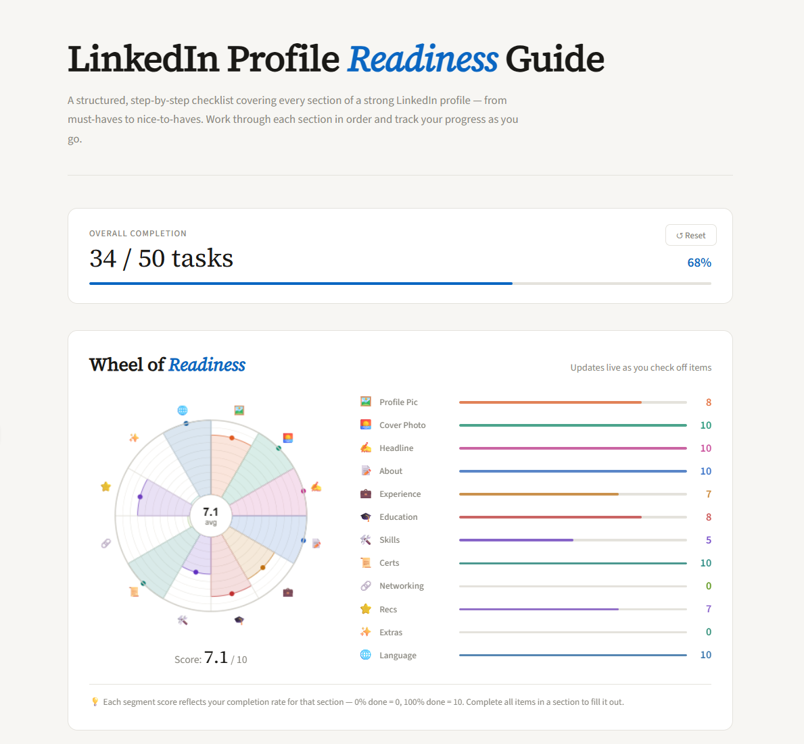
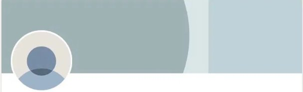
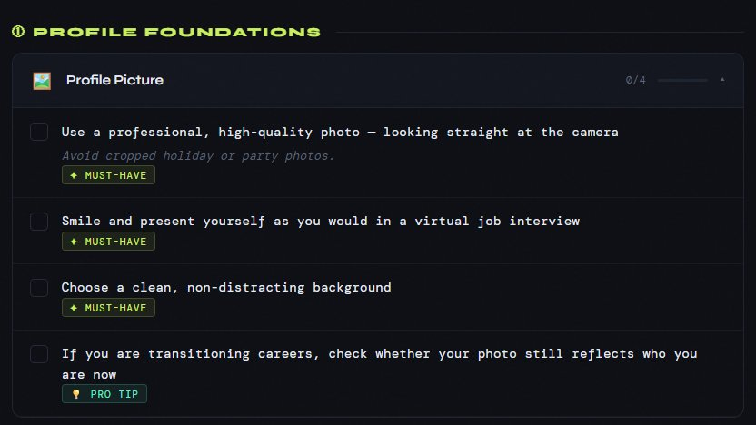
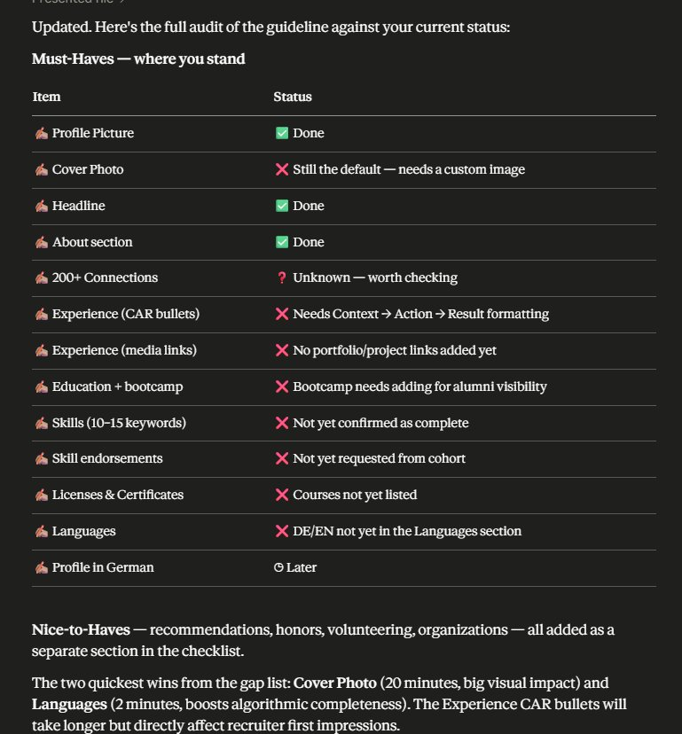
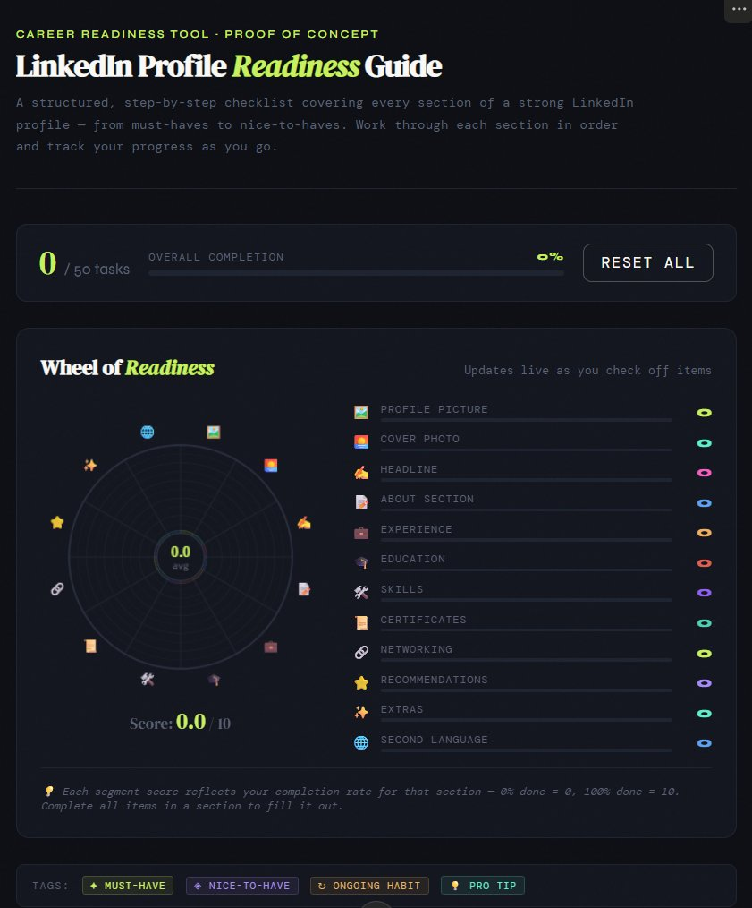
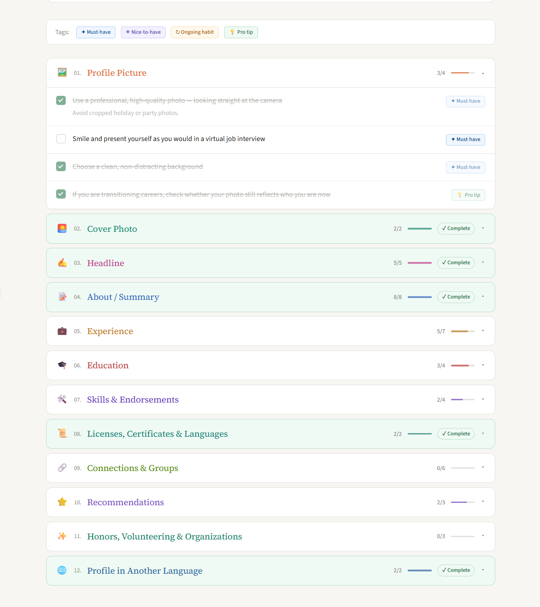

Ein statisches PDF wird in 21 Stunden zum interaktiven Tool. Ohne Figma, ohne Handoff, alles aus einer Hand. Natürliche Sprache als Interface, Vibe Coding als Methode.


Kein Foto. Kein Banner. Keine Aktivität.
Wann hast du zuletzt jemanden auf LinkedIn angeschrieben, der dich nicht kennt? Ich nie. LinkedIn benutzte ich als Jobboard. Mehr nicht. Das war der Stand bei mir, und wie sich im Bootcamp-Discord schnell zeigte, auch bei anderen.
Der Career Compass von neuefische setzte genau dort an. Aber das Material selbst wurde zur neuen Hemmschwelle. 43 Lectures, knapp 7 Stunden, neben einem laufenden intensiven Weiterbildungsprogramm. Wer anfing zu arbeiten, merkte schnell: alles hängt mit allem zusammen. Der Banner beeinflusst den Headline-Text. Der Headline-Text hängt am Positioning. Das Positioning sitzt noch nicht. Also nichts ist fertig.
Die Reihenfolge war da. Aber jede Änderung zog sofort andere Bereiche nach sich. Man kam ins Stocken, fing von vorne an, kam nie zu einem überzeugenden Abschluss.
Innerhalb des Career Compass gab es ein Konzept, das mich nicht losließ: das Wheel of Readiness for the Market. Nicht wegen seiner Funktion, sondern wegen der Metapher dahinter.
Als UX/UI Designer weiß ich um die Bedeutung von Metaphern für die Gestaltung mentaler Modelle. Eine gute Metapher reduziert Komplexität, indem sie etwas Unbekanntes an etwas Bekanntes ankoppelt. Meine liebste ist die Desktop-Metapher der grafischen Benutzeroberfläche: Ordner, Papierkorb, Schreibtisch. Keine dieser Dinge existiert wirklich, aber sie machen ein abstraktes System sofort navigierbar.
Beim Wheel of Readiness stellte ich mir die Frage: Stimmt die Metapher überhaupt? Ein Rad-Diagramm mit Werten von 1 bis 10, sollte das nicht wie ein Bullseye funktionieren? Die Frage beschäftigte mich so sehr, dass ich Coach Olga direkt anschrieb.
Olga: "The idea behind the Wheel is that the more balanced and 'round' your shape is across all areas, the smoother your journey will be."
Das Wheel of Readiness for the Market ist Teil des Career Compass Programms von neuefische, ein Selbsteinschätzungs-Tool, das Teilnehmer dabei unterstützt, ihren Stand in 8 Kernbereichen der Jobsuche zu reflektieren und konkrete nächste Schritte abzuleiten.
Das war der Moment, an dem aus passivem Konsumieren aktives Weiterdenken wurde. Das Wheel of Readiness for the Market deckte alle Bereiche der Jobsuche ab, LinkedIn tauchte darin in nur zwei von acht Dimensionen auf, als Teilaspekt und nicht als eigenständiger Bereich. Die Lücke war klar.
Die Metapher war verstanden. Was fehlte, war Zeit. Zwei Deadlines liefen parallel: CV Lab-Beratungen erforderten mindestens ein abgeschlossenes Kapitel, der LinkedIn PUMP Sprint wollte ein Profil das nicht mehr brachlag.
Der erste Prompt an Claude: "Please go through these texts and extract the to-dos and turn them into tickable bullet points." Das Material war teils als Prosa verfasst. Der Prompt löste das Problem schnell genug, um die Deadline zu halten.

Aus Stichpunkten werden Checkboxen, anklickbar und abhakbar, erledigte Punkte durchgestrichen und grau eingefärbt. Dieselbe Logik wie handgeschriebene Zettel auf der Kommode, nur im Browser. Must-Have, Nice-to-Have, Pro Tip als Tags.

Als UX/UI Designer der gerade intensiv Datenvisualisierung lernte stellte ich mir die Frage: Wie macht man den Gesamtfortschritt greifbar? Da erinnerte ich mich an die Metapher. Sie wurde zum Visualisierungsprinzip. Das Wheel aktualisiert sich live beim Abhaken.

Das dark theme wurde durch ein helles, LinkedIn-nahes Design ersetzt. Checklist und Wheel in einer Ansicht. Tags, Fortschrittsbalken, Live-Score. Deployed auf GitHub Pages als einzelne HTML-Datei.

Den Code hat Claude AI generiert, als einzelne HTML-Datei ohne Framework. Ich hätte es in React gebaut, aber das war nicht nötig, weil es kein State-Management, keine Komponenten-Wiederverwendung und kein Backend brauchte. GitHub Pages, eine Datei, fertig.
Bevor ich den Post veröffentlichte, kontaktierte ich Olga direkt. Ich hatte Material aus dem Career Compass als Ausgangspunkt verwendet, also Inhalte, die das Career Team erarbeitet hatte und nicht ich. Das stillschweigend zu tun wäre falsch gewesen. Olga gab grünes Licht.
Was ich in diesem Prozess als Methode eingesetzt habe, war keine klassische Entwicklungsstrategie. Es war schrittweise Komplexitätsreduktion durch natürliche Sprache.
Fließtext zu Stichpunkten, Stichpunkte zu Checkboxen. Jeder Schritt hat nicht nur die Datenmenge reduziert, sondern auch den kognitiven Load verringert. Eine Checkbox, die zwischen erledigt und nicht erledigt unterscheidet, ist keine technische Entscheidung. Sie ist eine Designentscheidung.
Das Interface zwischen mir und dem Ergebnis war natürliche Sprache, auf Englisch oder Deutsch, je nachdem was im kreativen Gedankenprozess gerade näher lag. Ich habe beschrieben was wie aussehen und funktionieren soll, präzise genug, weil ich das fachliche Verständnis hatte um präzise zu beschreiben. UX/UI Verständnis bestimmt was beschrieben wird, Entwicklungsverständnis bestimmt ob das Ergebnis stimmt, und KI übersetzt beides in funktionierenden Code.
Wer beim Arbeiten mit KI Probleme präzise in Worte fassen kann, kann Sprache als Werkzeug verwenden, um seine eigenen Lösungen zu gestalten.
Von erstem Prompt bis zur ersten integrierten, gestylten Version: 21 Stunden, aufgeteilt auf zwei Sessions. Kein Figma. Kein Handoff. Alles aus einer Hand.
Aber die Resonanz ging über Metriken hinaus.
Ein Head Coach Java Development bei neuefische testete das Tool und kommentierte öffentlich mit Score 4,8 und dem Urteil "easy to use and insightful." Das war kein Lob, sondern Nutzerfeedback von jemandem, der das Tool tatsächlich durchlief.
In den Kommentaren entstand ein echtes Produktgespräch: Eine Produktmanagerin brachte einen konkreten UX-Einwand zur Datenpersistenz bei Gerätewechsel, worauf mein Gegenvorschlag eines Share-Links mit URL-encoded State als valide Weiterentwicklung bestätigt wurde.
A very cool example of our students taking ideas from the program and evolving them further in their own way. Taking a concept, improving it, and turning learning into something useful for others. That's exactly the kind of initiative and ownership we hope to encourage.
Your projects don't only demonstrate technical or design skills, they also tell a story about initiative, curiosity, collaboration, and applying learning in practice. These are the qualities hiring managers are often looking for.
Dieses Projekt ist kein UX Research. Es gibt keine Nutzerinterviews, keine dokumentierten Hypothesen, keine strukturierten Usability-Tests. Wer das hier sucht, wird es nicht finden.
Was es ist: ein ehrlicher Problem-Discovery- und Execution-Prozess. Ein Problem im eigenen Kontext erkannt, eine bestehende Metapher hinterfragt und verstanden, Scope bewusst klein gehalten, transparent kommuniziert, auf Nutzerfeedback substanziell geantwortet.
Am Anfang hatte ich gedanklich bereits alles aufgesetzt: ein Trello Board, ein GitHub Repo, ein React Setup, ein Figma Board, ein Miro Board. Das klassische Zusammenspiel von Projektmanagement, Product Owner, Developer und UX/UI Designer, verteilt auf Rollen, Tools und Phasen.
Ich habe nichts davon gebraucht.
Weder UX/UI Verständnis noch Entwicklungsverständnis noch KI hätte allein gereicht. Zusammen haben sie es möglich gemacht, von der Idee zur funktionierenden Lösung zu kommen, ohne auf ein Team, ein Budget oder perfekte Voraussetzungen zu warten.
KI habe ich dabei zur Exploration genutzt, nicht um das Denken zu ersetzen, sondern um es zu beschleunigen. Den Code hat Claude AI geschrieben. Aber welches Problem gelöst wird, welche Metapher trägt und welcher Scope sinnvoll ist, das waren meine Design-Entscheidungen.
Das ist keine Vereinfachung des Designprozesses. Es ist eine andere Form davon.
Interaktive Checkliste mit Live-Visualisierung.
Tool ausprobieren →